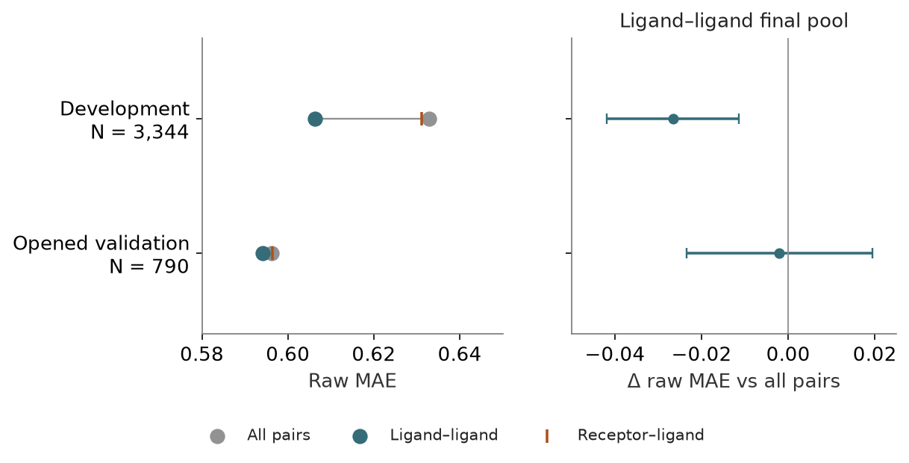

Final pair pooling — completed
Status: completed · Synthesis updated 2026-09-08. Original dates and immutable protocol history remain in the source evidence.
Question
Are direct receptor–ligand cells needed at the final pooling operation?

PNG · SVG · Plotted data · Figure provenance
{kind=link}
{kind=link}
Design and fitted/frozen flow
Upstream protein-conditioned features [frozen] → all-pairs, ligand–ligand-only or receptor–ligand-only final pool → nested fitted mean-384D ridge.
Results
All 4,134 compounds extracted with zero failures and positive-control parity. Ligand-only final pooling improves raw development MAE from 0.63279 to 0.60624; all-790 validation changes 0.59630 to 0.59421 with an unresolved paired interval.
Implication and limits
Ligand–ligand cells were already protein-conditioned. This does not show that Nesso ignores protein or establish a causal protein ablation.
All evidence is retrospective. Historical budgets, splits and raw versus uncertainty-weighted scores must remain distinct.
Source evidence
Original reports and exact tables (historical report links may refer to unbundled files).